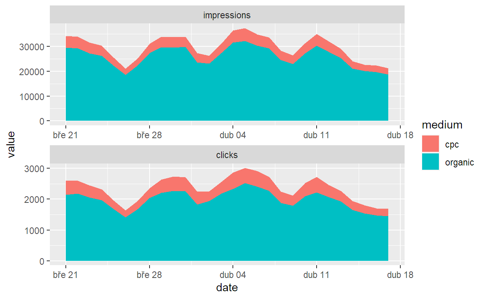
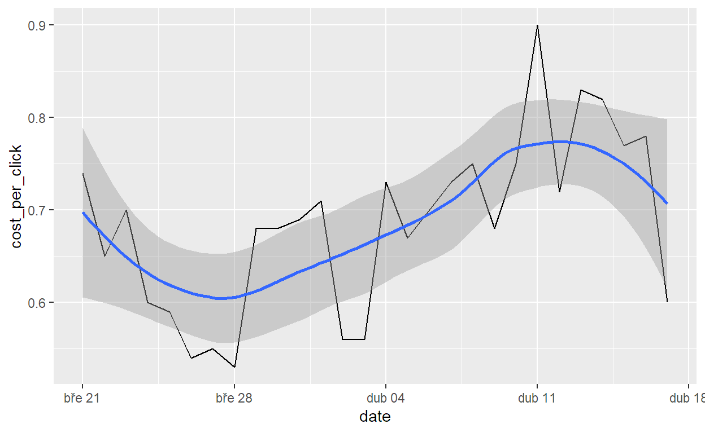

A short description of the post.
Propojení dat organického vyhledávání a PPC reklamy ve vyhledávání přináší zajímavé a pro praxi přínosné poučení. V tomto článku ukážu, která data má smysl propojit, jak je propojit v R, jak prezentovat výsledky a jak naplánovat kroky, které jdou na základě dat učinit.
Na problém se jde dívat ze dvou protilehlých stran:
Mám perfektně založené a pečlivě vedené PPC kampaně v Google Ads a případně v Skliku. Ty slouží jako určitý etalon, simulátor nebo řekněme trenažér toho, co bych chtěl dosáhnout v organickém vyhledávání. Díky datům z kampaní vím, které dotazy fungují, a na které vstupní stránky by měly ideálně směřovat. V organickém vyhledávání chci být vidět na stejné kombinace dotazů a vstupních stránek buď proto, abych zvýšil celkový výkon, nebo proto, abych na PPC trochu ušetřil.
Může to být ale i opačně. Organické vyhledávání mi funguje krásně a chtěl bych ho celé nebo část zreplikovat i do placeného vyhledávání, abych zvýšil celkový výkon. Placené pozice mají dnes ve vyhledávání vyšší CTR a je škoda je přenechávat konkurenci.
V reálných projektech to bývá někde mezi. Část vyhledávacích aktiv (vstupníh stránek a dotazů) funguje lépe v organiku, část v PPC. Takovou situaci jde kriticky zhodnotit a postupně vyladit do optimální rovnováhy.
Vše v tomto článku budu ukazovat na ddatech e-shopu Nazuby.cz, Moc děkuju majitelům za poskytnutí dat a Tomáši Izákovy z agentury Proof & Reason, který vše s klientem domluvil.
library(tidyverse)
library(lubridate)
library(gt)
library(googleAuthR)
library(googleAnalyticsR)
library(searchConsoleR)
options(lubridate.week.start = 1)
ga_view_id <- "25073918"
sc_site <- "https://www.nazuby.cz/"
sc_country <- "cze"
date_from <- as.Date("2022-03-21")
date_to <- date_from + 27
Vlastní funkce si dělám pro všechno, co se opakuje (pricip DRY – Don’t Repeat Yourself). Jednak to dá míň práce a jedna to snižuje chybovost. Taky se to víc líbí programátorům, takže mě budou míť kritizovat, že programuju jako prase.
Nadefinuju si tyhle funkce (tohle píšu předem, abych věděl, co vlastně chci udělat):
raw_data_dir vrátí název složky, do které budu zapisovat zdrojová data. Pokud složka ještě neexistuje, vytvoří ji. Funkci budu volat jen z ostatních funkcí. Pozor, funguje jen v R Mardownu, který jako pracovní adresář bere ten, ve kterém je sám uložený. Ve skriptu nebo v konzoli by se to muselo napsat jinak.read_sc při prvním zavolání načte data ze Search Console funkcí search_analytics z balíčku searchConsoleR a uloží je do souboru. Při druhém a dalším zavolání se stejným parametrem již načítá data z uloženého souboru. Parametrem bude jen dimenze, vše ostatní si funkce vezme z globálních proměnných.read_ga při prvním zavolání načte data Google Ads z Google Analytics funkcí google_analytics z balíčku googleAnalyticsR a uloží je do souboru. Při druhém a dalším zavolání se stejným parametrem již načítá data z uloženého souboru. Parametrem bude jen dimenze, vše ostatní si funkce vezme z globálních proměnných. Parametr dim_filters funkce google_analytics jsem nastavil tak, abych dostal jen dotazy přímo z Googlu, ne z jeho širší reklamní sítě.raw_data_dir <- function() {
dir_path = "dara-raw"
if (!dir.exists(dir_path)) dir.create(dir_path, showWarnings = FALSE)
dir_path
}
read_sc <- function(dimensions) {
rds_path <- file.path(
raw_data_dir(), paste0("sc-", paste(dimensions, collapse = "-"), ".rds")
)
row_limit <- as.integer(date_to - date_from) * 500 * (length(dimensions))
if (!file.exists(rds_path)) {
search_analytics(
siteURL = sc_site,
startDate = date_from,
endDate = date_to,
dimensions = dimensions,
dimensionFilterExp = paste0("country==", sc_country),
rowLimit = row_limit
) |>
write_rds(rds_path, compress = "gz")
}
read_rds(rds_path)
}
read_ga <- function(dimensions) {
rds_path <- file.path(
raw_data_dir(), paste0("ga-", paste(dimensions, collapse = "-"), ".rds")
)
if (!file.exists(rds_path)) {
google_analytics(
viewId = ga_view_id,
date_range = c(date_from, date_to),
dimensions = dimensions,
metrics = c(
"impressions", "adClicks", "CTR", "adCost", "CPC",
"transactions", "transactionRevenue", "costPerTransaction"
),
dim_filters = filter_clause_ga4(
list(
dim_filter("adDistributionNetwork", "EXACT", "Google Search"),
dim_filter("adMatchedQuery", "EXACT", "(not set)", not = TRUE),
dim_filter("adDestinationUrl", "EXACT", "(not set)", not = TRUE)
),
operator = "AND"
),
met_filters = filter_clause_ga4(list(met_filter("impressions", "GREATER_THAN", 0))),
order = order_type("impressions", sort_order = "DESCENDING"),
max = -1
) |>
write_rds(rds_path, compress = "gz")
}
read_rds(rds_path)
}
gar_auth(
email = Sys.getenv("MY_GOOGLE_ACCOUNT"),
scopes = c(
"https://www.googleapis.com/auth/analytics.readonly",
"https://www.googleapis.com/auth/webmasters"
)
)
ga_by_date <- read_ga("date")
ga_by_page <- read_ga("adDestinationUrl")
ga_by_query <- read_ga("adMatchedQuery")
ga_by_page_query <- read_ga(c("adDestinationUrl", "adMatchedQuery"))
sc_by_date <- read_sc("date")
sc_by_page <- read_sc(c("page"))
sc_by_query <- read_sc(c("query"))
sc_by_page_query <- read_sc(c("page", "query"))
Na začátku podobných analýz si vždy udělám porovnání impresí a kliků z organiku a PPC v čase. Kromě základního kontextu jsem tím v tomto případě získal tyto informace:
Důležitá poznámka: pro účely článku to trochu zjednodušuju. Reálně nejde na čtyrech týdnech dlouhodobější trend poznat. Ve skutečné analýze bych si graf nakreslil alespoň za rok.
ga_by_date |>
select(date, impressions, clicks = adClicks) |>
add_column(medium = "cpc") |>
bind_rows(
sc_by_date |>
select(date, impressions, clicks) |>
add_column(medium = "organic")
) |>
pivot_longer(cols = impressions:clicks, names_to = "metric") |>
mutate(metric = as_factor(metric)) |>
ggplot(aes(x = date, y = value, fill = medium)) +
geom_area() +
facet_wrap(~ metric, scales = "free", ncol = 1)

Mám rád jednu metriku, která na první pohled vypadá trochu divně: sečtu kliky z vyhledávání celkem, tedy jak z organického, tak z placeného, a vydělím jimi celkovou cenu placeného vyhledávání. Tím získám průměrné náklady nutné k dosažení jednoho kliku z vyhledávání.
K čemu je taková metrika dobrá? Pokud mám PPC už vyladěné a teď chci primárně zlepšovat SEO, její pokles mi říká, že se to daří (a růst opak).
ga_by_date |>
select(date, clicks = adClicks, adCost) |>
bind_rows(
sc_by_date |>
select(date, clicks)
) |>
group_by(date) |>
summarise(
clicks = sum(clicks),
adCost = sum(adCost, na.rm = TRUE)
) |>
mutate(cost_per_click = round(adCost / clicks, digits = 2)) |>
ggplot(aes(x = date, y = cost_per_click)) +
geom_line() +
geom_smooth()

Opět zde platí, že vykreslené období je pro hodnocení trendu příliš krátké, ale kdybych podobnou křivku viděl za delší období, zacinkal by mi v hlavně alarm. Znamenalo by to, že buď cosi (správce změnou nastavení, vyšší konkurence) zdražilo PPC kampaně nebo došlo ke snížení výkonu organického vyhledáváního.
lost_impressions_by_query <- ga_by_query |>
select(query = adMatchedQuery, impressions_cpc = impressions) |>
full_join(
sc_by_query |>
select(query, impressions_org = impressions, position),
by = "query"
) |>
mutate(
across(where(is.numeric), ~ replace_na(.x, 0)),
lost_impressions = impressions_cpc - impressions_org
)
lost_impressions_by_query |> glimpse()
Rows: 20,678
Columns: 5
$ query <chr> "curaprox", "mezizubní kartáčky", "nazuby",…
$ impressions_cpc <dbl> 3171, 2775, 1965, 1899, 1487, 1439, 1192, 1…
$ impressions_org <int> 2177, 3439, 1986, 2026, 1606, 1446, 1232, 8…
$ position <dbl> 10.568672, 6.846467, 1.008560, 4.636723, 3.…
$ lost_impressions <dbl> 994, -664, -21, -127, -119, -7, -40, -7418,…Které dotazy ztrácejí nejvíc impresí v organicu
gt_impressions <- function(x) {
x |>
gt(rowname_col = names(x)[1]) |>
fmt_number(position, decimals = 2) |>
tab_spanner("impressions", columns = contains("impressions")) |>
cols_label(
impressions_cpc = "cpc",
impressions_org = "organic"
) |>
opt_vertical_padding(0.6)
}
lost_impressions_by_query |>
slice_max(order_by = lost_impressions, n = 10) |>
gt_impressions() |>
cols_label(lost_impressions = "lost")
| impressions | position | |||
|---|---|---|---|---|
| cpc | organic | lost | ||
| curaprox | 3171 | 2177 | 994 | 10.57 |
| nazuby cz | 773 | 38 | 735 | 1.05 |
| opalescence | 932 | 401 | 531 | 10.37 |
| zubní můstek cena 2022 | 528 | 48 | 480 | 12.02 |
| cena můstku 4 zuby | 282 | 18 | 264 | 17.33 |
| oral b | 499 | 276 | 223 | 9.97 |
| curaprox 5460 | 226 | 13 | 213 | 21.08 |
| kartáčky curaprox | 245 | 38 | 207 | 10.03 |
| natura siberica | 185 | 0 | 185 | 0.00 |
| ústní voda na zánět dásní | 169 | 6 | 163 | 13.50 |
Které dotazy získavají nejvíc impresí v organicu
lost_impressions_by_query |>
slice_min(order_by = lost_impressions, n = 10) |>
mutate(lost_impressions = -lost_impressions) |>
gt_impressions() |>
cols_label(lost_impressions = "gained")
| impressions | position | |||
|---|---|---|---|---|
| cpc | organic | gained | ||
| dentální hygiena | 0 | 9461 | 9461 | 7.60 |
| philips sonicare | 1106 | 8524 | 7418 | 6.34 |
| sonický kartáček | 539 | 4483 | 3944 | 6.98 |
| afty v puse | 0 | 3815 | 3815 | 2.49 |
| zuby | 0 | 3426 | 3426 | 6.51 |
| aft | 0 | 3349 | 3349 | 1.78 |
| afty | 0 | 2892 | 2892 | 2.67 |
| zánět dásní | 0 | 2762 | 2762 | 7.95 |
| elektrický kartáček | 604 | 2896 | 2292 | 7.17 |
| ortodoncie | 9 | 2142 | 2133 | 11.39 |
lost_impressions_by_page <- ga_by_page |>
select(page = adDestinationUrl, impressions_cpc = impressions) |>
full_join(
sc_by_page |>
select(page, impressions_org = impressions, position),
by = "page"
) |>
mutate(
page = str_replace(page, fixed("https://www.nazuby.cz"), ""),
across(where(is.numeric), ~ replace_na(.x, 0)),
lost_impressions = impressions_cpc - impressions_org
)
lost_impressions_by_page |> glimpse()
Rows: 2,735
Columns: 5
$ page <chr> "/curaprox", "/", "/klasicke-mezizubni-kart…
$ impressions_cpc <dbl> 6927, 6769, 4018, 3652, 3470, 3428, 2942, 2…
$ impressions_org <int> 146, 5319, 5492, 8, 7783, 6622, 15558, 300,…
$ position <dbl> 6.657534, 1.839632, 6.246358, 17.125000, 6.…
$ lost_impressions <dbl> 6781, 1450, -1474, 3644, -4313, -3194, -126…Které stránky ztrácejí nejvíc impresí v organicu
lost_impressions_by_page |>
slice_max(order_by = lost_impressions, n = 10) |>
gt_impressions() |>
cols_label(lost_impressions = "lost")
| impressions | position | |||
|---|---|---|---|---|
| cpc | organic | lost | ||
| /curaprox | 6927 | 146 | 6781 | 6.66 |
| /philips-sonicare | 3652 | 8 | 3644 | 17.12 |
| /gc | 2794 | 300 | 2494 | 6.76 |
| / | 6769 | 5319 | 1450 | 1.84 |
| /braun-oral-b | 1172 | 1 | 1171 | 9.00 |
| /ustni-vody | 1774 | 606 | 1168 | 6.15 |
| /sonicky-zubni-kartacek?b=philips-sonicare | 1153 | 17 | 1136 | 9.59 |
| /elmex | 951 | 0 | 951 | 0.00 |
| /opalescence | 1100 | 270 | 830 | 10.59 |
| /zubni-sprcha | 733 | 5 | 728 | 23.40 |
Které dotazy získavají nejvíc impresí v organicu
lost_impressions_by_page |>
slice_min(order_by = lost_impressions, n = 10) |>
mutate(lost_impressions = -lost_impressions) |>
gt_impressions() |>
cols_label(lost_impressions = "gained")
| impressions | position | |||
|---|---|---|---|---|
| cpc | organic | gained | ||
| /afty-co-jsou-zac-a-jak-se-jich-co-nejrychleji-zbavit | 2 | 31027 | 31025 | 3.85 |
| /snimatelne-nahrady | 2942 | 15558 | 12616 | 4.65 |
| /dentalni-hygiena-co-vse-by-mela-obsahovat-vstupni-prohlidka | 0 | 12504 | 12504 | 7.75 |
| /philips-sonicare-porovnani | 31 | 12009 | 11978 | 7.34 |
| /elektricke-zubni-kartacky?b=philips-sonicare | 7 | 11947 | 11940 | 6.89 |
| /trhani-zubu-moudrosti-se-casto-nevyhneme | 685 | 11914 | 11229 | 4.97 |
| /znaceni-zubu | 703 | 11351 | 10648 | 5.29 |
| /extrakce-zubu | 0 | 10258 | 10258 | 5.17 |
| /elektricke-zubni-kartacky | 1785 | 11350 | 9565 | 4.54 |
| /zanet-dasni | 1 | 9317 | 9316 | 6.78 |
lost_impressions_by_page_query <- ga_by_page_query |>
select(
page = adDestinationUrl, query = adMatchedQuery, impressions_cpc = impressions
) |>
full_join(
sc_by_page_query |>
select(page, query, impressions_org = impressions),
by = c("page", "query")
) |>
mutate(
across(where(is.numeric), ~ replace_na(.x, 0)),
lost_impressions = impressions_cpc - impressions_org
)
lost_impressions_by_page_query
lost_impressions_by_page_query |>
filter(page == "https://www.nazuby.cz/curaprox") |>
select(!page) |>
left_join(
sc_by_page_query |>
filter(page != "https://www.nazuby.cz/curaprox") |>
select(query, impressions) |>
group_by(query) |>
summarise(org_other_pages = sum(impressions)),
by = "query"
) |>
mutate(org_other_pages = replace_na(org_other_pages, 0)) |>
select(!impressions_cpc) |>
filter(lost_impressions > 0)